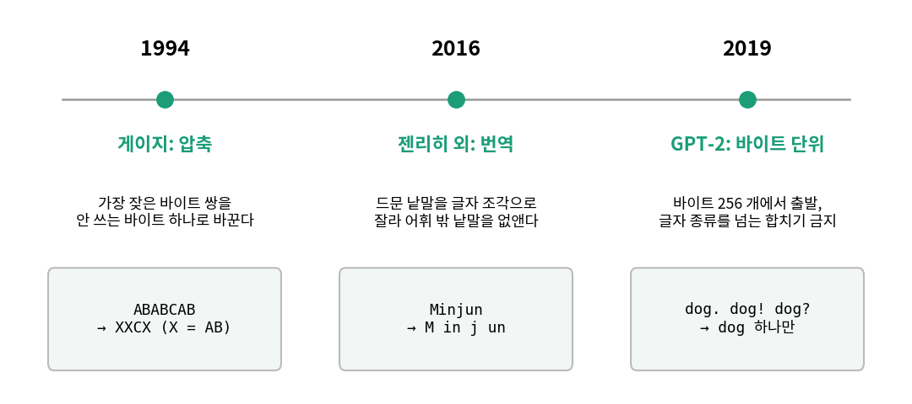
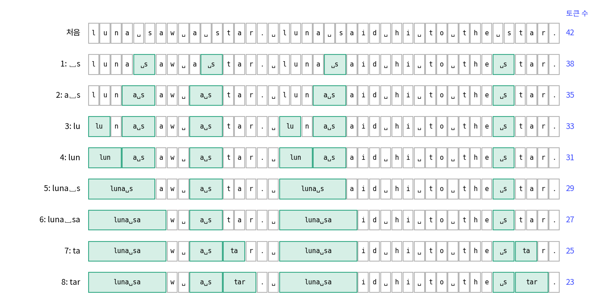

글자를 토큰으로: 루나라는 이름은 몇 조각인가
이 장의 물음
바이트 하나를 글자 하나로 보고 앞 글자를 세는 모델은 앞 글자를 여섯 개쯤 볼 때 가장 잘 맞혔고, 그보다 길게 보려 하면 학습 글에서 본 적 없는 문맥이 늘어나 표가 비어 갔다. 그런데 여섯 바이트에는 영어 낱말이 겨우 하나 들어간다. 「named Lily」를 읽으려면 열 바이트가 필요하고, 「Once upon a time」은 열여섯 바이트다. 글을 바이트보다 큰 조각으로 잘라서 세면 같은 개수의 조각으로 더 먼 앞까지 볼 수 있지 않을까?
조각을 크게 자르려면 어디서 자를지를 누군가 정해야 한다. 사람이 낱말 사전을 만들어 주면 쉬워 보이지만, 사전에 없는 이름이 나오면 그 이름은 어떻게 적을까? 그리고 영어로만 정한 조각으로 한국어 글을 자르면 어떻게 될까?
이 장은 다음 물음에 차례로 답한다.
- 사전 없이 글만 보고 조각을 정하는 규칙은 어떻게 짤까?
- 조각의 종류(어휘)를 늘리면 무엇이 줄고 무엇이 늘까?
- 같은 규칙으로 자르면 한국어 글은 영어 글보다 몇 배의 조각이 될까?
- 글을 미리 잘라 두는 방식은 무엇을 잃을까?
바이트 쌍 합치기: 자주 붙어 나오는 두 조각을 하나로
라운지 창가 자리에서 민준은 n-그램 표의 바이트당 비트를 다시 띄워 놓고 있었다. 앞 글자 여섯 개를 보는 7-그램이 1.2817까지 내려가지만, 학습 글을 줄이면 오히려 나빠졌다.

여섯 글자를 봐도 이름 앞에서는 「named 」까지밖에 못 봐. 「a girl」은 벌써 안 보여.

글자를 하나씩 세니까 그렇지. 「 named」를 한 칸에 넣으면 여섯 칸으로 낱말 여섯 개를 볼 수 있잖아.

그럼 낱말 사전부터 만들어? 루나가 「데네브」 같은 별 이름을 말하면 사전에 없을 텐데.

사전은 안 만들어. 글한테 정하게 하자. 자주 붙어 다니는 글자끼리 묶으면 되지 않을까?
이 절이 끝나면 루나는 글을 바이트 대신 토큰 4,096 종류로 읽게 된다. 실습은 바이트 단위 BPE 를 처음부터 짜서 타이니스토리즈로 학습하고, 합친 순서를 하나씩 들여다보는 것이다.
역사: 압축 기법이 낱말을 자르게 되기까지
서연이 말한 묶기는 원래 언어 모델이 아니라 파일 압축에서 나온 생각이다. 필립 게이지(Philip Gage)는 1994년 2월 『C 사용자 저널(C Users Journal)』에 「데이터 압축을 위한 새 알고리즘」을 실었다. 파일에서 가장 자주 붙어 나오는 바이트 쌍을 그 파일에 한 번도 쓰이지 않은 바이트 하나로 바꾸기를 되풀이하고, 바꾼 쌍의 목록을 함께 적어 두어 거꾸로 풀 수 있게 하는 방법이다. 이름도 그대로 바이트 쌍 부호화(byte pair encoding)라서, 줄여서 BPE 라 부른다.
이 방법을 낱말 자르기로 가져온 사람은 기계 번역을 연구하던 리코 젠리히(Rico Sennrich)와 배리 해도(Barry Haddow), 알렉산드라 버치(Alexandra Birch)다. 당시의 신경망 번역 모델은 자주 나오는 낱말 몇만 개만 어휘로 두고 드문 낱말은 「모르는 낱말」 기호 하나로 뭉갰으므로, 사람 이름이나 합성어가 번역문에서 사라졌다. 2015년 8월에 공개하고 2016년 ACL 학회에서 발표한 논문 「드문 낱말의 신경망 기계 번역: 낱말 조각 단위로」에서 그들은 바이트 대신 글자에서 출발해, 자주 붙어 나오는 글자 쌍을 새 기호로 합치기를 정한 횟수만큼 되풀이했다. 자주 나오는 낱말은 결국 기호 하나가 되고, 드문 이름은 글자 조각 몇 개로 남으므로 「모르는 낱말」이 없어진다.
2019년 OpenAI 의 GPT-2 논문(래드퍼드 팀, 「언어 모델은 비지도 다중 작업 학습자다」)은 출발점을 다시 바이트로 되돌렸다. 글자에서 출발하면 유니코드 글자 13만 개 정도를 처음 어휘에 모두 넣어야 하지만, UTF-8 바이트에서 출발하면 256 개만으로 모든 유니코드 글을 적을 수 있다. 다만 바이트열에 BPE 를 그대로 걸었더니 「dog.」「dog!」「dog?」처럼 같은 낱말이 문장 부호와 붙은 토큰으로 여러 번 어휘를 차지했다고 적었다. 그래서 GPT-2 는 글자 종류(글자, 숫자, 문장 부호)가 바뀌는 곳을 넘어서는 합치지 않게 막고, 낱말 앞의 공백만 예외로 낱말에 붙였다.

장난감 문장 하나로 여덟 번 합치기
규칙을 직접 따라가 보려면 손으로 셀 수 있을 만큼 짧은 글이 좋다. 다음 글자 맞히기에서 쓴 장난감 문장 「luna saw a star. luna said hi to the star.」는 42 바이트이고, 처음에는 바이트 하나가 토큰 하나다. 이웃한 두 토큰의 쌍을 모두 세어 가장 자주 나온 쌍을 새 토큰 하나로 바꾸고, 바뀐 열에서 다시 센다. 같은 횟수의 쌍이 여럿이면 문장에서 먼저 나온 쌍을 골랐다.
문장: 'luna saw a star. luna said hi to the star.'
처음: 토큰 42 개 (바이트 하나 = 토큰 하나)
l u n a ␣ s a w ␣ a ␣ s t a r . ␣ l u n a ␣ s a i d ␣ h i ␣ t o ␣ t h e ␣ s t a r .
합치기 1: '␣' + 's' -> '␣s' (4 번 붙어 나옴) -> 토큰 38 개
합치기 2: 'a' + '␣s' -> 'a␣s' (3 번 붙어 나옴) -> 토큰 35 개
합치기 3: 'l' + 'u' -> 'lu' (2 번 붙어 나옴) -> 토큰 33 개
…
합치기 8: 'ta' + 'r' -> 'tar' (2 번 붙어 나옴) -> 토큰 23 개
luna␣sa w ␣ a␣s tar . ␣ luna␣sa i d ␣ h i ␣ t o ␣ t h e ␣s tar .
어휘: 바이트 256 + 합친 것 8 = 264
문장 42 바이트 -> 토큰 23 개, 토큰 하나에 1.83 바이트
(출력의 ␣ 는 공백이다. 전체 출력은 sources/tokens/toy_bpe.out.)

여덟 번 합치자 토큰 수가 42 개에서 23 개로 거의 반이 되었고, 그 대가로 어휘는 256 개에서 264 개로 늘었다. 이렇게 이웃한 두 토큰 가운데 가장 자주 붙어 나오는 쌍을 새 토큰으로 합치기를 되풀이해 어휘를 만드는 방법을 BPE (바이트 쌍 합치기 / byte pair encoding)라 하고, 합친 순서를 적은 목록이 곧 토크나이저다. 처음 보는 문장을 자를 때는 목록의 합치기를 배운 순서대로 적용하면 된다. 「a star saw luna.」 16 바이트는 같은 여덟 합치기로 9 토큰이 된다.
그런데 그림의 다섯째 줄부터 이상한 토큰이 보인다. 「luna␣sa」는 낱말 「luna」와 다음 낱말의 앞 두 글자를 붙인 것이고, 「a␣s」도 낱말 경계를 넘었다. 장난감 문장에서는 「luna」 다음에 우연히 늘 「s」로 시작하는 낱말이 와서 그렇게 되었을 뿐인데, 이 토큰은 「luna ran」 같은 문장에서는 쓸모가 없다. GPT-2 논문이 「dog.」「dog!」를 두고 걱정한 것도 어휘 자리를 이런 토큰에 쓰는 낭비였다.
그래서 이 책의 토크나이저(sources/common/bpe.py)는 GPT-2 처럼 글을 먼저 「앞 공백 + 글자 묶음」 조각으로 나누고, 조각 안에서만 합친다. 같은 문장을 조각으로 나눠 여덟 번 합치면 결과가 이렇게 바뀐다.
조각: luna | ␣saw | ␣a | ␣star | . | ␣luna | ␣said | ␣hi | ␣to | ␣the | ␣star | .
합치기 1: '␣' + 's' -> '␣s' (4 번)
합치기 2: 'l' + 'u' -> 'lu' (2 번)
합치기 3: 'n' + 'a' -> 'na' (2 번)
…
합치기 7: 'lu' + 'na' -> 'luna' (2 번)
합치기 8: '␣st' + 'a' -> '␣sta' (2 번)
'luna saw a star. luna said hi to the star.' -> 토큰 24 개: luna ␣sa w ␣ a ␣sta r . ␣ luna ␣sa i d ␣ h i ␣t o ␣t h e ␣sta r .
'a star saw luna.' -> 토큰 8 개: a ␣sta r ␣sa w ␣ luna .
학습한 문장은 23 개가 아니라 24 개로 하나 늘었지만, 「luna」가 낱말 그대로 토큰이 되어 처음 보는 문장은 9 개가 아니라 8 개로 줄었다. 조각을 나누는 규칙은 학습 글을 조금 덜 줄이는 대신 처음 보는 글에 더 잘 맞는 토큰을 남긴다.
타이니스토리즈로 합치기 7,935 번
실제 학습은 장난감 문장에서 한 합치기를 큰 글에서 되풀이한다. 공용 모듈의 학습 함수는 글을 조각으로 나눈 뒤 같은 조각은 한 번만 세고(「 the」가 10만 번 나오면 조각 하나에 무게 10만), 합칠 때마다 쌍 개수를 처음부터 다시 세지 않고 바뀐 조각의 쌍만 고친다. 핵심만 옮기면 다음과 같다.
# sources/common/bpe.py 의 BPETokenizer.train 에서 발췌
chunk_counts = Counter(re.findall(SPLIT_PATTERN, text)) # 조각마다 나온 횟수
words = [list(c.encode("utf-8")) for c in chunk_counts] # 조각을 바이트열로
...
for k in range(n_merges):
pair = max(pair_counts, key=pair_counts.get) # 가장 자주 붙어 나오는 쌍
new_id = 256 + k
merges[pair] = new_id # 합친 순서가 곧 토크나이저
for wi in list(where[pair]): # 그 쌍이 든 조각만 다시 센다
...
words[wi] = merge(words[wi], pair, new_id)
타이니스토리즈 학습 파일 앞 50MB(49,181,333 바이트)로 어휘 8,192 까지(바이트 256 + 합치기 7,935 번 + 특수 토큰 하나) 배우는 데 이 머신의 CPU 로 32.1초가 걸렸다(sources/tokens/train_bpe.out). 처음 합친 쌍들은 영어에서 가장 흔한 글자 묶음이다.
## 처음 합친 20 개 (순번: 왼쪽 + 오른쪽 -> 새 토큰, 합칠 때 학습 글에서 센 수)
1: '␣' + 't' -> '␣t' (번호 256, 1,425,553 번)
2: 'h' + 'e' -> 'he' (번호 257, 1,419,665 번)
3: '␣' + 'a' -> '␣a' (번호 258, 1,064,939 번)
…
7: '␣t' + 'he' -> '␣the' (번호 262, 649,571 번)
…
11: '␣a' + 'nd' -> '␣and' (번호 266, 437,130 번)
일곱 번째 합치기에서 이미 「 the」가 토큰 하나가 되고, 열한 번째에 「 and」가 된다. 동화에 자주 나오는 낱말이 토큰 하나가 된 순번을 찾아보면 학습 글이 무엇을 많이 말하는지가 보인다.
## 낱말이 토큰 하나가 된 순번 (어휘 8,192 안에서)
' the': 7번째 합치기 (토큰 번호 262)
' Lily': 149번째 합치기 (토큰 번호 404)
' Tim': 85번째 합치기 (토큰 번호 340)
' Luna': 1960번째 합치기 (토큰 번호 2215)
'Once': 173번째 합치기 (토큰 번호 428)
' upon': 182번째 합치기 (토큰 번호 437)
' named': 146번째 합치기 (토큰 번호 401)
' Minjun': 어휘 8,192 안에 토큰 하나로는 없음 -> ['␣M', 'in', 'j', 'un']
' star': 251번째 합치기 (토큰 번호 506)
' friend': 102번째 합치기 (토큰 번호 357)
민준은 표를 위에서부터 읽어 내려가다 한 줄에서 멈췄다.

1960번째! 「 Luna」가 토큰 하나가 됐어. 루나가 이제 한 칸이야.
「 Lily」는 149번째인데. 루나는 한참 뒤네.

타이니스토리즈에 루나가 별로 안 나오니까 그렇지. 그래도 4,096 안에 들었잖아. 어휘 512 였으면 「␣L un a」 세 조각이었어.

「 Minjun」은 8,192 안에도 못 들었네. 「␣M in j un」.

…동화에 민준이 나올 리가 없잖아.
이 책의 동화 모델들은 합치기 목록의 앞 3,839 개만 잘라 쓴 어휘 4,096 짜리 토크나이저(바이트 256 + 합친 것 3,839 + 이야기 경계를 알리는 특수 토큰 <|endoftext|> 하나)를 쓴다. 1960번째 합치기는 그 안에 들므로, 루나는 이제부터 「 Luna」를 한 토큰으로 읽는다.
ML에서: 모델은 토큰 번호만 본다
언어 모델은 글자를 보지 못하고 토크나이저가 건넨 토큰 번호의 열만 본다. 「 Luna」는 모델에게 2215라는 번호 하나이고, 그 번호가 L, u, n, a 네 글자로 되어 있다는 사실은 모델 안 어디에도 적혀 있지 않다. 큰 언어 모델이 「strawberry 에 r 이 몇 개냐」 같은 글자 세기에 서툴다는 이야기가 자주 나오는데, 토큰 단위로 읽는다는 점이 그 이유로 흔히 꼽힌다. 그래서 같은 모델 구조라도 어떤 토크나이저를 쓰느냐에 따라 모델이 맞혀야 하는 문제 자체가 달라진다.
문제 1. banana bandana
「banana bandana」 14 바이트를 바이트열로 보고(조각 나누기 없이), 가장 자주 붙어 나오는 이웃 쌍을 새 토큰으로 합치기를 세 번 하라. 같은 횟수의 쌍이 여럿이면 먼저 나온 쌍을 고른다. 합칠 때마다 토큰 수는?
쌍을 세 볼게. b a, a n, n a, a n, n a, a ␣, ␣ b, b a, a n, n d, d a, a n, n a. 「a n」이 네 번이라 제일 많아. 합치면 「b an an a ␣ b an d an a」, 10 개.
그다음은 「b an」이 두 번, 「an a」도 두 번인데, 먼저 나온 건 맨 앞의 「b an」이야. 합치면 「ban an a ␣ ban d an a」로 8 개.

셋째는요?
「an a」가 두 번 남았어요. 「ban ana ␣ ban d ana」, 6 개요. 14 개가 10, 8, 6 으로 줄었네요.

처음 합칠 때는 네 개가 줄고 그다음부터는 두 개씩 줄었어요. 왜 그럴까요?

한 번 합치면 그 쌍이 나온 횟수만큼 토큰이 줄어요. 「a n」은 네 번 나와서 넷이 줄고, 뒤의 쌍들은 두 번씩이라 둘씩요. 그러니까 BPE 는 한 번에 가장 많이 줄어드는 쌍을 고르는 거네요.
그래요. 그래서 앞에서 합친 토큰일수록 글을 많이 줄이고, 뒤로 갈수록 한 번 합칠 때 줄어드는 양이 작아져요. 타이니스토리즈의 첫 합치기 「␣t」가 142만 번 붙어 나왔다는 숫자도 같은 뜻이에요.
문제 2. 큰 어휘를 잘라 작은 어휘를 만들 수 있나
이 책은 어휘 8,192 까지 한 번 학습한 합치기 목록의 앞부분만 잘라 어휘 512, 1,024, …, 4,096 토크나이저를 만들었다. (가) 어휘 4,096 이면 합치기 몇 개를 쓰는가? (나) 처음부터 어휘 512 로 따로 학습한 토크나이저와, 어휘 1,024 로 학습한 목록의 앞부분을 자른 토크나이저는 같은가? (다) 자르는 위치가 목록의 중간이면 문제가 생기지 않을까?
(가)는 4,096 에서 바이트 256 과 특수 토큰 하나를 빼면 3,839 개예요.
(나)는 돌려 보면 되지. 학습 글 앞 5MB 로 둘을 따로 학습했더니, 어휘 512 의 합치기 255 개가 어휘 1,024 목록의 앞 255 개와 전부 같았어(sources/tokens/problems.out).
왜 같을까요? 학습을 따로 했는데요.

음, 어휘 크기는 언제 멈출지만 정하는 거라서요. 합칠 쌍을 고를 때는 어휘 크기를 안 봐요. 같은 글에서 같은 규칙으로 고르면 255 번째까지는 똑같이 가겠네요.

(다)가 마음에 걸려요. 뒤의 합치기를 잘라 내면, 남은 토큰 중에 잘려 나간 토큰을 재료로 쓰는 게 있을 수도 있잖아요.
합치기 k 번째가 재료로 쓰는 두 토큰은 언제 생긴 토큰이에요?

k 번째보다 먼저요. 아직 없는 토큰은 셀 수가 없으니까요. 그럼 앞부분을 어디서 자르든 재료는 늘 남아 있네요.
그래요. 합치기 목록은 앞에서부터 쌓이는 형태라, 어느 자리에서 잘라도 제대로 된 토크나이저가 남아요.
문제 3. 낱말 경계를 넘는 토큰
장난감 문장을 조각 나누기 없이 여덟 번 합치면 「luna␣sa」 같은 토큰이 생겼다. 학습한 문장은 23 토큰이 되었고, 조각으로 나눠 합치면 24 토큰이었다. 그런데 처음 보는 「a star saw luna.」는 앞의 방식으로 9 토큰, 뒤의 방식으로 8 토큰이었다. 학습 글을 더 짧게 줄이는 방식이 왜 처음 보는 글에서는 지는가?
「luna␣sa」는 「luna」 뒤에 「sa」가 올 때만 쓸 수 있어. 처음 보는 문장에서는 「luna.」로 끝나니까 그 토큰을 못 쓰고 「lun a」로 흩어졌고.
그럼 「luna␣sa」는 학습 문장에서 「luna saw」, 「luna said」가 우연히 둘 다 「sa」로 시작해서 생긴 거네. 글에 있는 우연까지 외운 토큰이야.

어휘 자리는 한정돼 있어요. 우연한 이음새에 자리를 쓰면, 그만큼 어느 글에나 나오는 낱말이 토큰이 될 자리를 잃어요. GPT-2 논문이 「dog.」「dog!」「dog?」을 막은 것도 같은 이유였어요.

학습 글을 짧게 줄이는 것만 보면 앞의 방식이 이기는데, 토크나이저는 처음 보는 글을 자르려고 쓰는 거니까요. 검증 글로 재야겠네요.